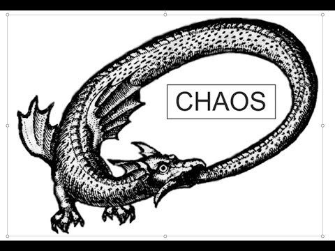

The Metaphysical Dionysius is an amalgamation of philosophical musings, introspective ideals, and a departure from traditional conventions, all through the lens of the protagonist, Dionysius — an embodiment of the author's unconscious desires, characterized by contradiction, neurosis, and delusion. This fictional exploration of metaphysics is not bound by linear objectives, but rather flows as a continuous stream of consciousness, encompassing the author's aspiration for a heightened perception and understanding.
The book offers readers an intellectual and philosophical odyssey, provoking contemplation on the intricacies of the human experience and inviting them to challenge their own perceptions of reality. It is a captivating work that immerses readers in a world of profound ideas, prompting reflection long after the final page has been turned.
Within this fictionary work, readers embark on a journey of introspection and abstract contemplation, inviting them to ponder the intricacies of existence, the boundaries of human comprehension, and the significance of intuition in navigating the mysteries of the unknown.
As we stand on the precipice of an era where the belief in God seems to have waned in the hearts of many, and methodical religion gradually loses its grip, it is crucial to recall that the profound essence of Christianity does not solely reside in its metaphysical dogmas, but rather in the cultural treasures that it has nurtured throughout history.
While the tenets and doctrines of Christianity may have played a significant role in shaping its identity, it is the prosperous tapestry of art, literature, music, architecture, and societal values that have woven an enduring cultural legacy. The masterpieces of Renaissance art, the haunting chants of Gregorian plainsong, and the awe-inspiring cathedrals and basilicas that have stood for centuries—these are the articulations of a vibrant Christian culture that transcends sheer theological beliefs.
By delving into the richness of Christian culture, we can find inspiration, meaning, and a connection to something greater than our mere selves — a testament to the enduring power of its intuitive, intellectual, and moral contributions.